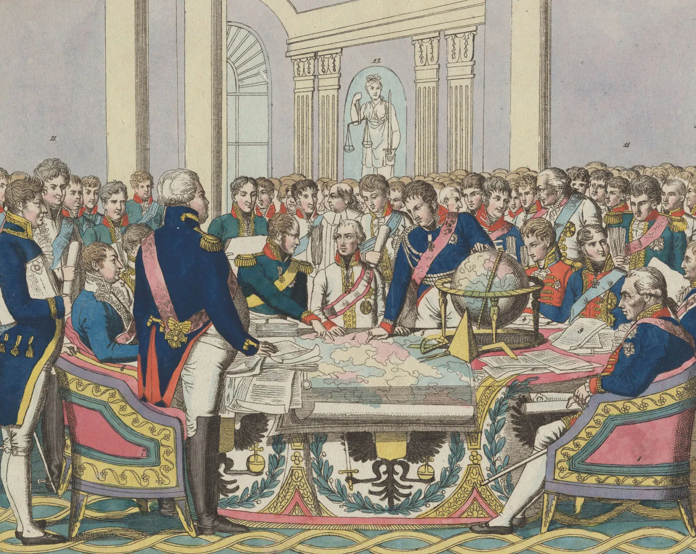
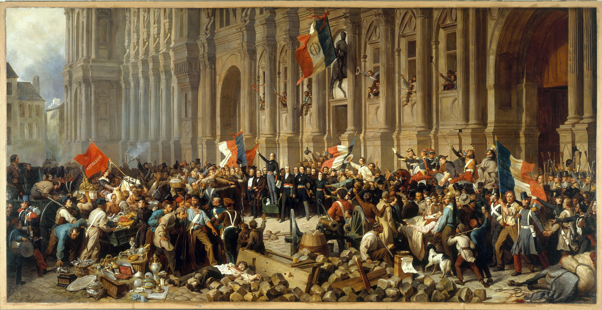
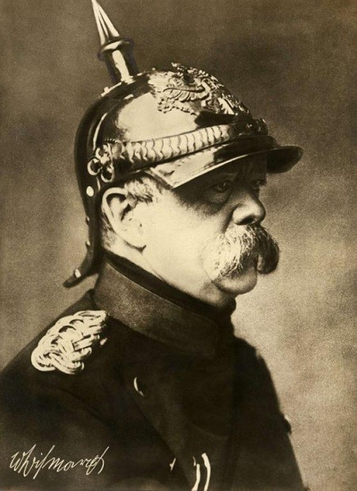
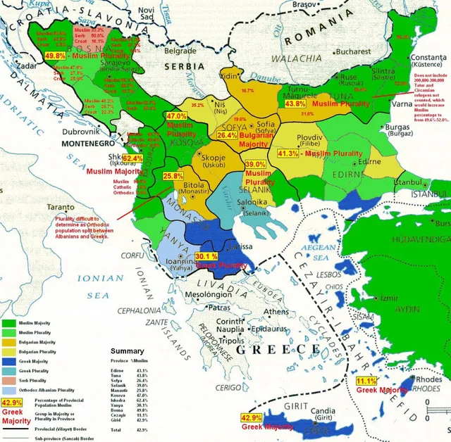
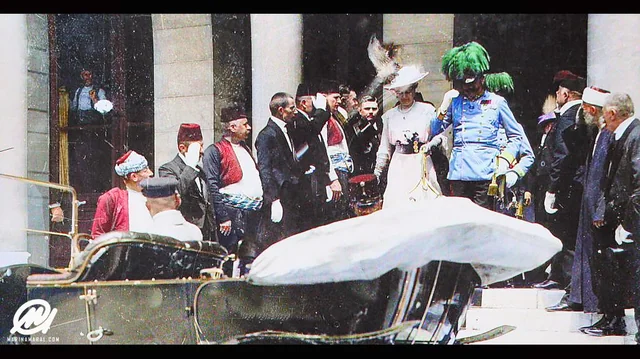
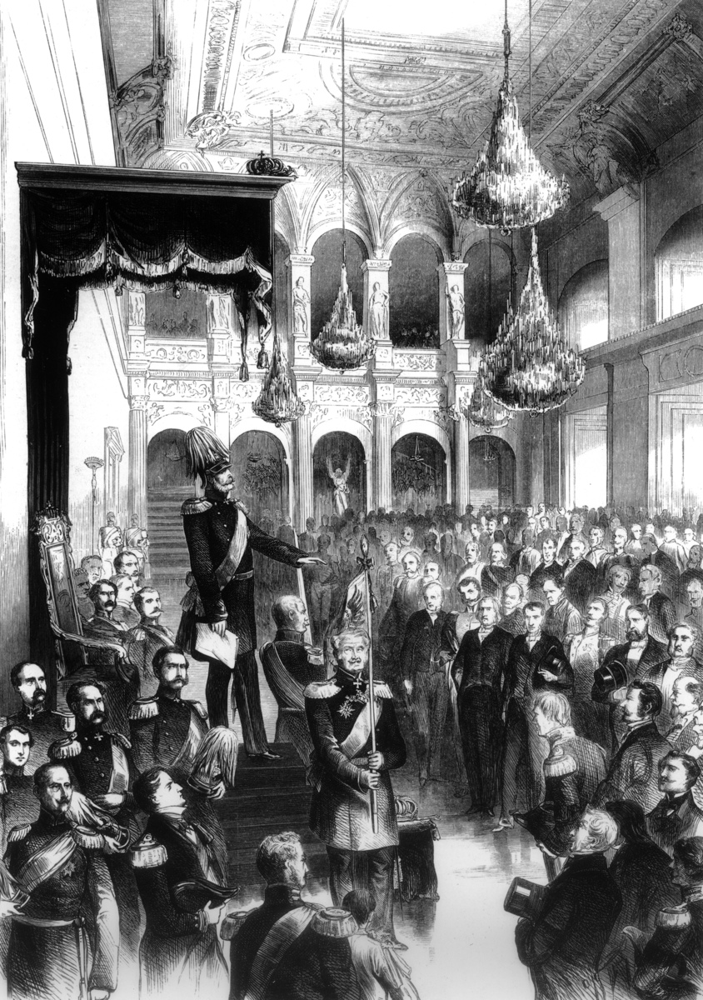
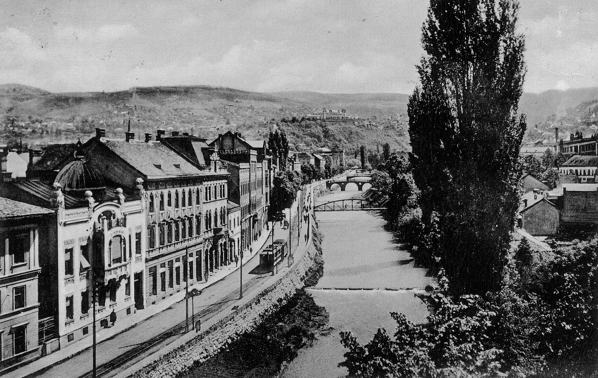
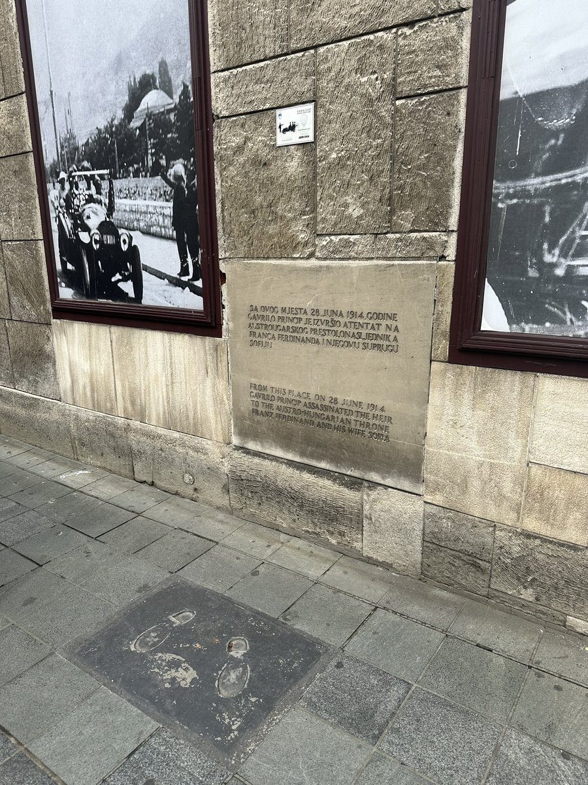

World History : Semester 1 : Lesson 08 : Standards 10.2 / 10.5
Nationalism & the Road to WWI
Essential Question
How did nationalism spread across Europe after Napoleon, get repressed, and finally explode into the 20th century?
NATIONALISM AND EUROPE : 1815 TO 1914
1815
Congress of Vienna redraws Europe after Napoleon; suppresses nationalist movements to restore old order.
1848
Revolutions sweep France, Germany, Austria, and Italy: briefly threatening every major monarchy before being crushed.
1871
Italy unifies under Garibaldi and Cavour; Germany unifies under Bismarck: permanently shifting the European balance of power.
1878–1913
Balkan Wars of independence from the Ottoman Empire; Serbia, Bulgaria, and Romania emerge as new nationalist states.
1914
Assassination of Franz Ferdinand in Sarajevo: the spark that lights the powder keg nationalism had built for a century.
On June 28, 1914, nineteen-year-old Gavrilo Princip stepped out of a shop in Sarajevo and fired two shots into an open car. He killed Archduke Franz Ferdinand, heir to the Austro-Hungarian EmpireA large Central European empire that ruled many ethnic groups until World War I.. Princip wanted a homeland where South SlavicA group of related Slavic peoples in southeastern Europe, including Serbs, Croats, and Bosnians. people could govern themselves. That dream had a name: nationalismThe belief that people with shared language, culture, or history should govern themselves..
On June 28, 1914, a nineteen-year-old named Gavrilo Princip fired two shots into a car in Sarajevo. He killed Archduke Franz Ferdinand, the next ruler of the Austro-Hungarian Empire. Princip wanted South Slavic people to have their own country. That dream was called nationalism.
Nationalism was not new in 1914. For nearly one hundred years, European leaders had tried to control it, silence it, or use it for their own power. Some people saw nationalism as freedom. Others saw it as a threat that could destroy empires. By 1914, that tension was ready to explode.
Nationalism had been growing for about one hundred years. Some people saw it as freedom. Kings and empires saw it as dangerous. By 1914, the pressure had built up so much that one event could set off a war.
CHAPTER ONE
NAPOLEON AND THE CONGRESS OF VIENNA

The Congress of Vienna, 1814–1815, painted by Jean-Baptiste Isabey. The great powers of Europe gathered to restore the old order after Napoleon's defeat: drawing new maps without asking the people who lived there. Wikimedia Commons.
Napoleon Bonaparte changed Europe in two opposite ways. His armies conquered lands and forced people to live under French control. At the same time, his armies spread ideas from the French Revolution: liberty, equality, and the belief that people could govern themselves. Many Europeans hated French occupation, but they remembered those ideas.
Napoleon changed Europe in two ways. His armies conquered many places and controlled people. But they also spread ideas from the French Revolution. One big idea was that people should be able to govern themselves.
After Napoleon fell in 1815, Europe's rulers feared those ideas. They knew nationalism could encourage Germans, Italians, Poles, and others to demand their own countries. So they gathered at the Congress of Vienna. Their goal was to restore the old order and stop future revolutions.
After Napoleon lost, Europe's rulers were afraid. They knew people might ask for their own countries. German, Italian, and Polish nationalists could challenge kings and empires. So leaders met at the Congress of Vienna to bring back the old order.
The Congress of ViennaAn 1814 to 1815 meeting where European powers redrew borders after Napoleon's defeat. was led by Austrian diplomat Klemens von Metternich. The great powers: Austria, Prussia, Russia, Britain, and France, redrew Europe's map to protect monarchies. They did not ask what local people wanted. Poles were divided among empires, Germans stayed split into many states, and Italians remained divided across kingdoms and foreign rule.
The Congress of Vienna was a meeting of powerful countries after Napoleon lost. Leaders redrew the map of Europe to protect kings and empires. They did not ask local people what they wanted. Poles, Germans, and Italians stayed divided.
To Metternich and other conservative leaders, nationalism looked dangerous. If people believed borders should match language, culture, or ethnic identity, old empires could break apart. The leaders wanted stability, not self-government. For many Europeans, that meant their national hopes were pushed down instead of solved.
To conservative leaders, nationalism looked dangerous. If people wanted borders based on language or culture, old empires could fall apart. Leaders wanted stability. Many people who wanted their own countries were told no.
The result was the Concert of EuropeAn agreement among major European powers to work together against revolutions.. The major powers agreed to stop nationalist or revolutionary uprisings wherever they appeared. This system worked for a while because armies could crush protests. But it could not erase the idea that people deserved to govern themselves.
The result was the Concert of Europe. Powerful countries agreed to stop revolutions together. Their armies could crush protests for a while. But they could not erase the idea of self-government.
Real-world connection: The Congress of Vienna shows what can happen when powerful leaders draw borders for their own convenience. If borders ignore local identities, conflict can last for generations. Similar problems appeared again after World War I and during decolonization.
Real-world connection: Powerful leaders often draw borders to help themselves. When they ignore the people who live there, problems can last for many years. This happened again after World War I and during decolonization.
DID YOU KNOW
The Congress of Vienna became famous for its balls, parties, and banquets. One diplomat joked that "the Congress dances, but does not progress." While kings and diplomats danced, they redrew the map of an entire continent.
CHAPTER TWO
REVOLUTIONS, UNIFICATION, AND A NEW EUROPE

Barricades during the 1848 revolution in Paris. The revolutions of 1848 swept across France, the German states, Austria, and Italy: briefly threatening every major European monarchy. Wikimedia Commons.
In 1848, uprisings broke out across Europe almost at the same time. A revolution in Paris overthrew the French monarchy. Soon revolts spread to the German states, the Austrian Empire, and the Italian peninsula. Students, workers, and middle-class professionals demanded constitutions, national unity, and self-determinationThe right of people to choose their government and political future..
In 1848, revolutions broke out across Europe. People protested in France, Germany, Austria, and Italy. Students, workers, and professionals wanted constitutions and national unity. They wanted the right to choose their own future.
For a short time, the old order looked weak. Then the monarchies regrouped and called in their armies. One by one, the revolutions were crushed. By 1849, every major uprising had failed, but the desire for national unity had not disappeared.
For a few months, it looked like the old kings might fall. Then the kings used armies to stop the revolutions. By 1849, the uprisings had failed. But the desire for national unity stayed alive.
The failure of 1848 changed nationalism. Before 1848, many nationalists were idealistic. They believed free nations could live peacefully once they escaped old monarchies. After the revolutions failed, nationalism became harder, more focused on ethnic identity, and more willing to use force.
The failure of 1848 changed nationalism. Before 1848, many nationalists were idealistic. They believed free countries could live peacefully. After the revolutions failed, more nationalists believed force might be necessary.
A new political idea gained influence: RealpolitikPolitics based on power and strategy instead of ideals or moral arguments.. Realpolitik meant using power, strategy, and timing instead of relying on speeches or ideals. The leader who used this approach most successfully was Otto von Bismarck of Prussia. He believed German unity would come through war and diplomacy, not democratic debate.
A new idea called Realpolitik became important. It meant using power and strategy instead of just ideals. Otto von Bismarck of Prussia used this approach. He believed Germany would unite through war and diplomacy, not speeches.

Otto von Bismarck, Minister-President of Prussia and first Chancellor of the German Empire. He unified Germany through three carefully engineered wars between 1864 and 1871. Wikimedia Commons.
BismarckThe Prussian statesman who unified Germany through war and diplomacy. became Prussia's Minister-President in 1862. He set out to unify the German states through "blood and iron," his phrase for military power. He led Prussia into three wars: against Denmark, Austria, and France. Each war helped Prussia gain more control over the German states.
Bismarck became one of Prussia's most powerful leaders in 1862. He wanted to unite Germany through "blood and iron," meaning military power. He led Prussia into three wars. Each war made Prussia stronger.
In 1871, after France was defeated, Bismarck declared the German Empire in the Hall of Mirrors at Versailles. This was not an accident. Versailles was one of France's most important royal palaces, so the announcement humiliated France. The new Germany immediately became the strongest power on the European continent.
In 1871, Bismarck announced the new German Empire inside the French palace of Versailles. This humiliated France after its defeat. The new Germany became the strongest country in Europe. Every other European power had to respond.
Italy unified during the same period through a different partnership. GaribaldiThe military leader who helped unify Italy with his volunteer Red Shirts. led volunteer fighters called the Red Shirts in southern Italy. Cavour, a skilled political leader, handled diplomacy in the north. By 1871, Italy was unified for the first time since ancient Rome.
Italy unified during the same years. Garibaldi led volunteer fighters called the Red Shirts in southern Italy. Cavour handled politics and diplomacy in the north. By 1871, Italy was one country for the first time in centuries.
Germany and Italy changed the map of Europe. Both were new nation-states created through war, diplomacy, and nationalist belief. Their success proved that nationalism could defeat the old order. It also showed that nationalism could make Europe more unstable, not more peaceful.
Germany and Italy changed Europe. Both became new nation-states through war, diplomacy, and nationalism. Their success showed that nationalism could defeat old empires and kingdoms. It also made Europe less stable.
Real-world connection: German and Italian unification became a model for other nationalist movements. People in the Balkans, Asia, and Africa later used similar arguments for independence. But the model also connected nationalism with military power.
Real-world connection: Germany and Italy became examples for other nationalist movements. People in the Balkans, Asia, and Africa later demanded independence too. But this also linked nationalism with war.
FAST FACTS
NATIONALISM BY THE NUMBERS, 1815–1914
39German states existed before Bismarck helped unite them into one German Empire in 1871
50+years the Concert of Europe tried to suppress nationalist movements after 1815
3wars Bismarck used between 1864 and 1871 to unify Germany under Prussian leadership
99years passed between the Congress of Vienna in 1815 and the start of World War I in 1914
CHAPTER THREE
THE BALKANS: POWDER KEG OF EUROPE

The Balkans in the late 19th century: a region where Serbs, Bulgarians, Greeks, Romanians, and Bosnians lived under Ottoman and Austro-Hungarian rule and fought for independence. Wikimedia Commons.
The BalkansA region in southeastern Europe where empires and nationalist movements collided. became the most dangerous place for nationalism in Europe. Serbs, Bulgarians, Greeks, Romanians, Bosnians, and Albanians lived there. For centuries, much of the region had been ruled by the Ottoman Empire. As the empire weakened, Balkan peoples fought for independence.
The Balkans became Europe's most dangerous place for nationalism. Many groups lived there, including Serbs, Bulgarians, Greeks, Romanians, and Bosnians. Much of the region had been ruled by the Ottoman Empire. As the empire weakened, people fought for independence.
Each new Balkan nation inspired others. Greece won independence in 1829. Serbia gained more self-rule, Bulgaria became a state in 1878, and Romania unified. These victories made nationalism feel possible. They also made the remaining empires more afraid.
Each new Balkan nation inspired others. Greece became independent in 1829. Serbia, Bulgaria, and Romania gained more freedom. These victories made nationalism feel possible. They also made empires nervous.
Two empires still controlled parts of the Balkans: the declining Ottoman Empire and the Austro-Hungarian Empire. Austria-Hungary was a multi-ethnic empireAn empire that rules many different ethnic groups inside one political system. with Germans, Hungarians, Czechs, Slovaks, Croatians, Serbs, and others. Serbian nationalists wanted a "Greater Serbia" that united South Slavic peoples. Austria-Hungary saw that dream as a threat to its survival.
Two empires still controlled parts of the Balkans: the Ottoman Empire and Austria-Hungary. Austria-Hungary ruled many different ethnic groups. Serbian nationalists wanted to unite South Slavic peoples into a bigger Serbia. Austria-Hungary saw this as a serious threat.
If Serbia inspired South Slavic people inside Austria-Hungary to leave, the whole empire could unravel. This is why Balkan nationalism frightened Austria's leaders so much. By 1914, the ethnic nationalismNationalism based on shared ethnicity, language, or ancestry. of the Balkans had made the region explosive. Journalists called it "the powder keg of Europe."
If Serbia inspired South Slavic people to leave Austria-Hungary, the empire could fall apart. That is why Balkan nationalism scared Austria's leaders. By 1914, the Balkans were so tense that people called the region "the powder keg of Europe."
ART SPOTLIGHT
Liberty Leading the People : Eugène Delacroix, 1830
Delacroix painted this monumental work in the weeks after the 1830 French revolution: showing Liberty as a real woman leading armed citizens of every social class over the barricades, with Paris burning in the background. The painting is held at the Louvre Museum in Paris.
Delacroix was not a political radical; he was an artist who found the revolution alarming but impossible to ignore. Napoleon III later kept the painting from public display because he feared it could inspire new uprisings. A painting meant to remember a revolution kept feeling dangerous.
CHAPTER FOUR
THE ROAD FROM SARAJEVO TO WAR

Archduke Franz Ferdinand and Duchess Sophie arrive in Sarajevo on June 28, 1914: minutes before their assassination. Wikimedia Commons.Europe's alliance systems in 1914: two armed blocs connected by secret treaties that turned a local assassination into a world war within six weeks. Wikimedia Commons.
The assassination became catastrophic because of the system around it. Europe in 1914 was divided into two armed alliance blocs. Secret treaties promised that countries would defend their allies if war began. This meant a local crisis could pull in far larger powers.
The assassination became dangerous because of Europe's alliance system. Countries had promised to defend their allies. This meant one local crisis could pull in many countries. A small conflict could become a huge war.
Austria-Hungary blamed Serbia and issued an ultimatumA final demand that can lead to punishment or war if refused.. Serbia's reply did not satisfy Austria, so Austria prepared for war. Russia began mobilizationPreparing soldiers, weapons, and supplies for war. to protect Serbia. Germany mobilized to support Austria, France mobilized to support Russia, and Britain entered after Germany invaded Belgium. In six weeks, a nationalist assassination became a world war.
Austria-Hungary blamed Serbia and gave Serbia an ultimatum, or final demand. Serbia's answer did not satisfy Austria, so Austria prepared for war. Russia prepared to defend Serbia. Germany backed Austria, France backed Russia, and Britain joined after Germany invaded Belgium. In six weeks, one assassination had become a world war.
The path from 1815 to 1914 becomes clearer in hindsight. The Congress of Vienna tried to suppress nationalism, but it could not erase it. The failure of 1848 made some nationalists more willing to use force. German and Italian unification showed that military power could build nations.
Looking back, the pattern is clear. The Congress of Vienna tried to stop nationalism, but it failed. The revolutions of 1848 failed too, but they made some nationalists more willing to use force. Germany and Italy showed that war could create new nations.
The Balkans showed that empires were losing control. In 1914, nationalism that had been building for a century finally overflowed. Gavrilo Princip did not create all the causes of World War I by himself. He lit a fuse that Europe's leaders, empires, alliances, and nationalist movements had already built.
The Balkans showed that empires were losing control. In 1914, nationalism finally exploded. Gavrilo Princip did not create all the causes of World War I by himself. He lit a fuse that Europe had already built.
Real-world connection: Conflicts can still grow when ethnic nationalism, fragile states, and alliance systems collide. The lesson of 1914 is not that nationalism always causes war. It is that nationalism becomes dangerous when leaders use it with fear, military planning, and rigid alliances.
Real-world connection: Nationalism does not always cause war. But it can become dangerous when leaders add fear, armies, and alliances. That is one lesson of 1914.
PRIMARY SOURCE MOMENT

Prussian parliamentary chamber connected to Bismarck's 1862 Blood and Iron speech. Wikimedia Commons.
"Prussia must concentrate and maintain its power for the favorable moment, which has already slipped by several times. Prussia's borders under the Vienna treaties are not favorable for a healthy state life. The great questions of the time will not be resolved by speeches and majority decisions: that was the great mistake of 1848 and 1849: but by iron and blood."
: Otto von Bismarck, "Blood and Iron" speech to the Prussian parliament's Budget Committee, 1862
WHY THIS MATTERS: Bismarck argued that speeches and votes had failed in 1848. He believed German unity required power, timing, and military force. His words help explain how nationalism changed from a movement for freedom into a tool that statesmen could use to build stronger armies and new empires.
IN SIMPLE TERMS: Bismarck is saying that Germany would not be unified by debate. He believed it would be unified by force.
THEN AND NOW
NATIONALISM DIDN'T END IN 1914 OR 1918. THE SAME FORCE THAT BUILT MODERN EUROPE IS STILL RESHAPING IT.
1914

Sarajevo, June 28, 1914: the day one nationalist's act set off a world war. Wikimedia Commons.
NOW

The Latin Bridge in Sarajevo today: where WWI began, now a memorial visited by people from around the world. Wikimedia Commons / CC.
THEN
In 1914, Sarajevo was a city where Austro-Hungarian rule met South Slavic nationalism. Gavrilo Princip fired two shots near the Latin Bridge. Those shots triggered alliances, mobilization, and declarations of war across Europe.
NOW
Today, Sarajevo's Latin Bridge is a memorial site visited by people from around the world. The city also reminds visitors that nationalism did not end in 1914. In the 1990s, Sarajevo survived a long siege during the Bosnian War, when nationalist conflict again tore the region apart.
CONNECTION
Nationalism can build unity, pride, and independence. It can also divide people when leaders define the nation too narrowly or use fear to gain power. The history from 1815 to 1914 shows that nationalism becomes especially dangerous when it joins military planning, empire, and rigid alliances.
Can nationalism bring people together without creating conflict with other groups? Why or why not?